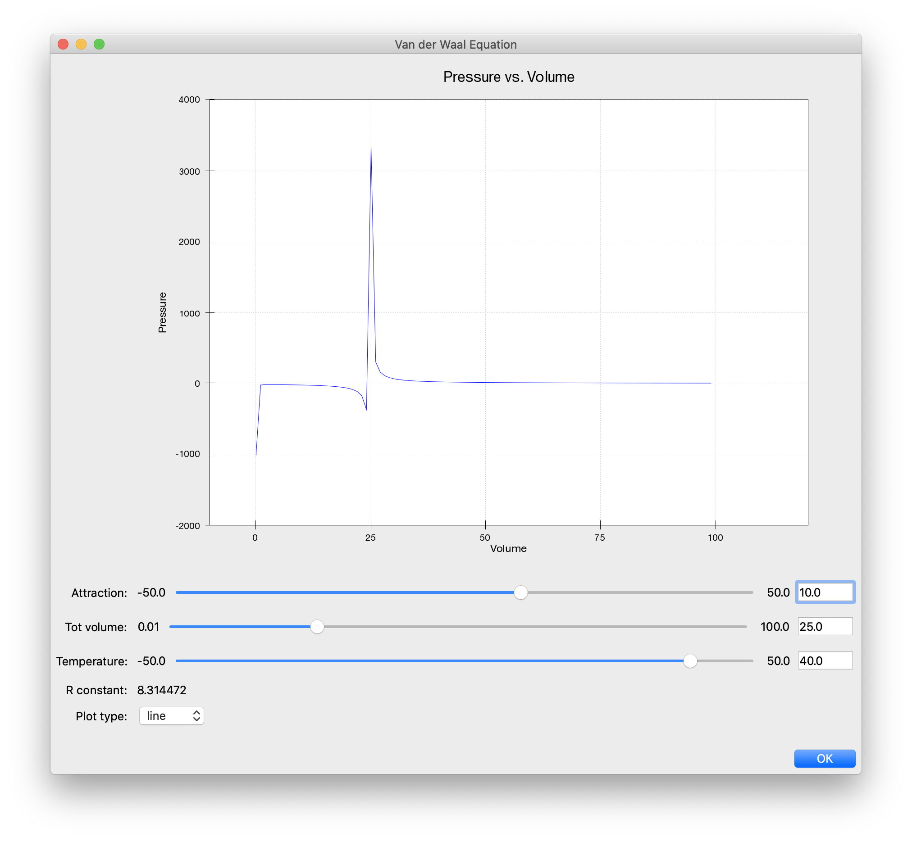

Modeling Van der Waal’s Equation With Chaco and Traits¶
Overview¶
In this example we will walk through the creation of a program that plots a scientific equation. In particular, we will model Van der Waal’s Equation, which is a modification to the ideal gas law that takes into account the nonzero size of molecules and the attraction to each other that they experience.
Writing the Program¶
First, we define a HasTraits class and the elements necessary to model the task.
The following class is made for the Van der Waal equation, whose
variables can be viewed on
this wiki page. The
volume and pressure attributes hold lists of our X- and
Y-coordinates, respectively, and are defined as arrays. The attributes
attraction and tot_volume are input parameters specified by the
user. The type of the variables dictates their appearance in the GUI. For
example, attraction and tot_volume are defined as Ranges, so they
show up as slider bars. Likewise, plot_type is shown as a drop-down
list, since it is defined as an Enum.
# We'll also import a few things to be used later.
import numpy as np
from chaco.api import ArrayPlotData, Plot
from enable.api import ComponentEditor
from traits.api import (
Array,
Enum,
Float,
HasTraits,
Instance,
observe,
Property,
Range,
)
from traitsui.api import Item, UItem, View
class Data(HasTraits):
volume = Array()
pressure = Array()
attraction = Range(low=-50.0, high=50.0, value=0.0)
tot_volume = Range(low=.01, high=100.0, value=0.01)
temperature = Range(low=-50.0, high=50.0, value=50.0)
r_constant = Float(8.314472)
plot_type = Enum("line", "scatter")
plot = Instance(Plot)
...
Creating the View¶
The main GUI window is created by defining a Traits View instance.
This View contains all of the GUI elements, including the plot. To
link a variable with a widget element on the GUI, we create a Traits
Item instance with the same name as the variable and pass it as an
argument of the Traits View instance declaration. The
TraitsUI User Manual
discusses the View and Item objects in depth.
In order to embed a Chaco plot into a Traits View, we can do exactly the same,
only we must explicitly specify the editor of that Item to be a
ComponentEditor.
class Data(HasTraits):
...
traits_view = View(
UItem(
"plot",
editor=ComponentEditor(),
resizable=True
),
Item(name='attraction'),
Item(name='tot_volume'),
Item(name='temperature'),
Item(name='r_constant', style='readonly'),
Item(name='plot_type'),
resizable=True,
buttons=["OK"],
title='Van der Waal Equation',
width=900,
height=800,
)
...
Initializing the plot¶
Now, we need to give the initial details of the plot that we want the view to
display. To do so, we define a method to construct the default value for
plot. We wrap the data we wish to plot in an ArrayPlotData
object, and then create a Plot instance using that data. We then
configure some properties of the plot before finally calling the plot()
method to create a plot renderer for the plot. When doing so we specify the
type of plot to create based of the value of the plot_type trait,
and we also use this trait as the name of our plot. This name will show up
again later.
class Data(HasTraits):
...
def _plot_default(self):
self.plotdata = ArrayPlotData(x=self.volume, y=self.pressure)
plot = Plot(self.plotdata)
plot.title = 'Pressure vs. Volume'
plot.x_axis.title = "Volume"
plot.y_axis.title = "Pressure"
plot.range2d.set_bounds((-10, -2000), (120, 4000))
plot.padding_left = 80
plot.plot(
("x", "y"), type=self.plot_type, name=self.plot_type, color="blue"
)
return plot
...
Updating the Plot¶
The power of Traits and Chaco enables the plot to update itself whenever the X- or Y-arrays are changed. Currently, our plot is stuck as the default defined above and will not react to changes. So, we need a function to re-calculate the X- and Y-coordinate lists whenever the input parameters are changed by the user moving the sliders in the GUI.
The volume attribute is the independent variable and pressure is
the dependent variable. The relationship between pressure and volume, as derived
from the equation found on the wiki page, is:
r_constant * temperature attraction
pressure = ------------------------ - ----------
volume - tot_volume volume**2
Next, there are two programing tasks to complete:
Define trait listener method(s) for your input parameters. These methods are automatically called whenever the parameters are changed, since it will be time to recalculate the
pressurearray.Write a calculation method that updates your lists of X- and Y-coordinates for your plot.
The following is the code for these two needs:
# Re-calculate when attraction, tot_volume, or temperature are changed.
@observe('attraction, tot_volume, temperature')
def calc(self, event=None):
""" Update the data based on the numbers specified by the user. """
self.volume = np.arange(.1, 100)
self.pressure = (
(self.r_constant*self.temperature)/(self.volume - self.tot_volume)
- self.attraction/(self.volume*self.volume)
)
self.plot.data.set_data("x", self.volume)
self.plot.data.set_data("y", self.pressure)
The calc() function computes the pressure array using the current
values of the independent variables. It then updates the data of our
plot to use the newly computed values. Meanwhile, the
@observe() decorator (provided by Traits) tells Python to call
calc() whenever any of the attributes attraction,
tot_volume, or temperature changes.
In addition to reacting to changes in the input parameters, we also want our
plot to change based on the user selected plot_type. To do this, we can
define a separate listener as follows:
@observe("plot_type")
def _update_plot_type(self, event):
old_plot_type, new_plot_type = event.old, event.new
self.plot.delplot(old_plot_type)
self.plot.plot(
("x", "y"), type=new_plot_type, name=new_plot_type, color="blue"
)
Here we are listening for changes in the plot_type trait. When it changes,
we delete the old plot and create a new plot using the new plot_type. The
name of the plot is how we specify a plot to delete, hence our previous
reuse of the plot_type as the name.
Testing your Program¶
The application is now in a state where can be tested by instantiating a copy
of the class and then creating the view by calling the
configure_traits() method on the class. For a simple test, run these
lines from an interpreter or a separate module:
from vanderwaals import Data
viewer = Data()
viewer.calc() # Must calculate the initial (x,y) lists
viewer.configure_traits()
Clicking and dragging on the sliders in the GUI dynamically updates the pressure data array, and causes the plot to update, showing the new values.
Screenshots¶
Here is what the program looks like:
But it could be better….¶
It seems inconvenient to have to call a calculation function manually
before we call configure_traits(). Also, the pressure equation depends on
the values of other variables. It would be nice to make the
relationship between the dependant and independent variables clearer.
There is another way we could define our variables that is easier for
the user to understand, and provides better source documentation.
Since our X-values remain constant in this example, it is wasteful to
keep recreating the volume array. The Y-array, pressure, is the
single array that needs to be updated when the independent variables
change. So, instead of defining pressure as an Array, we define
it as a Property. Property is a Traits type that allows you to define
a variable whose value is recalculated whenever it is requested. In
addition, when the observe argument of a Property constructor is
set to list of traits in your HasTraits class, the property’s trait
events fire whenever any of the dependent trait’s change events
fire. This means that the pressure attribute fires a trait change
whenever our observe traits are changed. Meanwhile, we can set up the Chaco
plot to automatically listen to the pressure attribute, so the plot
display gets the new value of pressure whenever someone changes
the input parameters!
When the value of a Property trait is requested, the
_get_trait_name method is called to calculate and return its
current value. So we define use the _get_pressure() method as our new
calculation method. It is important to note that this implementation
does have a weakness. Since we are calculating new pressures each
time someone changes the value of the input variables, this could slow
down the program if the calculation is long. When the user drags a
slider widget, each stopping point along the slider requests a
recompute.
For the new implementation, these are the necessary changes:
Define the Y-coordinate array variable as a Property instead of an Array.
Perform the calculations in the
_get_trait_namemethod for the Y-coordinate array variable, which is_get_pressure()in this example.Define the
_trait_defaultmethod to set the initial value of the X-coordinate array, so_get_pressure()does not have to keep recalculating it.Set up a listener to update the plot whenever the
pressuretrait changes.Remove the previous
@observe()decorator and calculation method.
The new pieces of code to add to the Data class are:
class Data(HasTraits):
...
pressure = Property(
Array, observe=['temperature', 'attraction', 'tot_volume']
)
...
def _volume_default(self):
""" Default handler for volume Trait. """
return np.arange(.1, 100)
def _get_pressure(self):
"""Recalculate when a trait the property observes changes."""
return (
(self.r_constant*self.temperature)/(self.volume - self.tot_volume)
- self.attraction/(self.volume*self.volume)
)
@observe("pressure")
def _update_plot(self, event):
self.plotdata.set_data("y", self.pressure)
You now no longer have to call an inconvenient calculation function
before the first call to configure_traits()!
Source Code¶
The final version of the program, vanderwaals.py
"""
Example application for exploring Van der Waal's Equation
"""
import numpy as np
from chaco.api import ArrayPlotData, Plot
from enable.api import ComponentEditor
from traits.api import (
Array,
Enum,
Float,
HasTraits,
Instance,
observe,
Property,
Range,
)
from traitsui.api import Item, UItem, View
class Data(HasTraits):
volume = Array()
pressure = Property(
Array, observe=['temperature', 'attraction', 'tot_volume']
)
attraction = Range(low=-50.0, high=50.0, value=0.0)
tot_volume = Range(low=.01, high=100.0, value=0.01)
temperature = Range(low=-50.0, high=50.0, value=50.0)
r_constant = Float(8.314472)
plot_type = Enum("line", "scatter")
plot = Instance(Plot)
def _plot_default(self):
self.plotdata = ArrayPlotData(x=self.volume, y=self.pressure)
plot = Plot(self.plotdata)
plot.title = 'Pressure vs. Volume'
plot.x_axis.title = "Volume"
plot.y_axis.title = "Pressure"
plot.range2d.set_bounds((-10, -2000), (120, 4000))
plot.padding_left = 80
plot.plot(
("x", "y"), type=self.plot_type, name=self.plot_type, color="blue"
)
return plot
def _volume_default(self):
""" Default handler for volume Trait Array. """
return np.arange(.1, 100)
def _get_pressure(self):
"""Recalculate when a trait the property observes changes."""
return (
(self.r_constant*self.temperature)/(self.volume - self.tot_volume)
- self.attraction/(self.volume*self.volume)
)
@observe("pressure")
def _update_plot(self, event):
self.plotdata.set_data("y", self.pressure)
@observe("plot_type")
def _update_plot_type(self, event):
old_plot_type, new_plot_type = event.old, event.new
self.plot.delplot(old_plot_type)
self.plot.plot(
("x", "y"), type=new_plot_type, name=new_plot_type, color="blue"
)
self.plot.invalidate_and_redraw()
traits_view = View(
UItem(
"plot",
editor=ComponentEditor(),
resizable=True
),
Item(name='attraction'),
Item(name='tot_volume'),
Item(name='temperature'),
Item(name='r_constant', style='readonly'),
Item(name='plot_type'),
resizable=True,
buttons=["OK"],
title='Van der Waal Equation',
width=900,
height=800,
)
popup = Data()
if __name__ == '__main__':
popup.configure_traits()